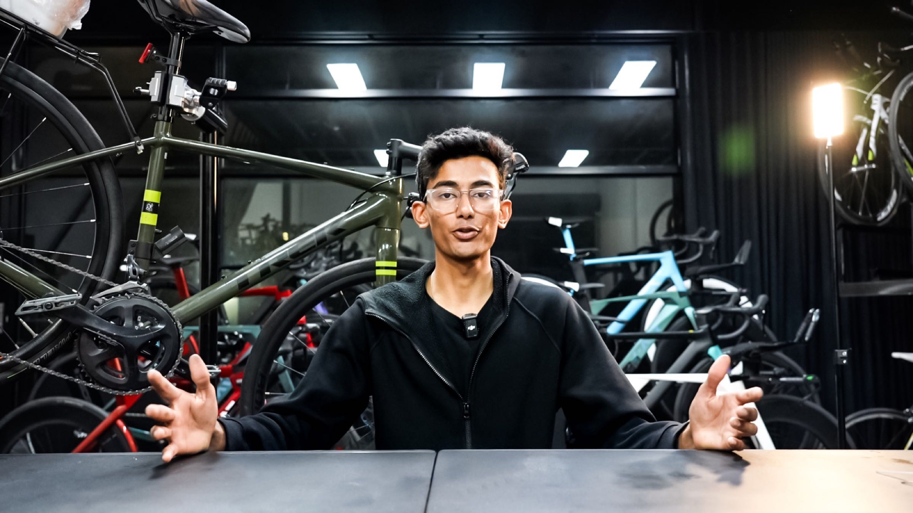
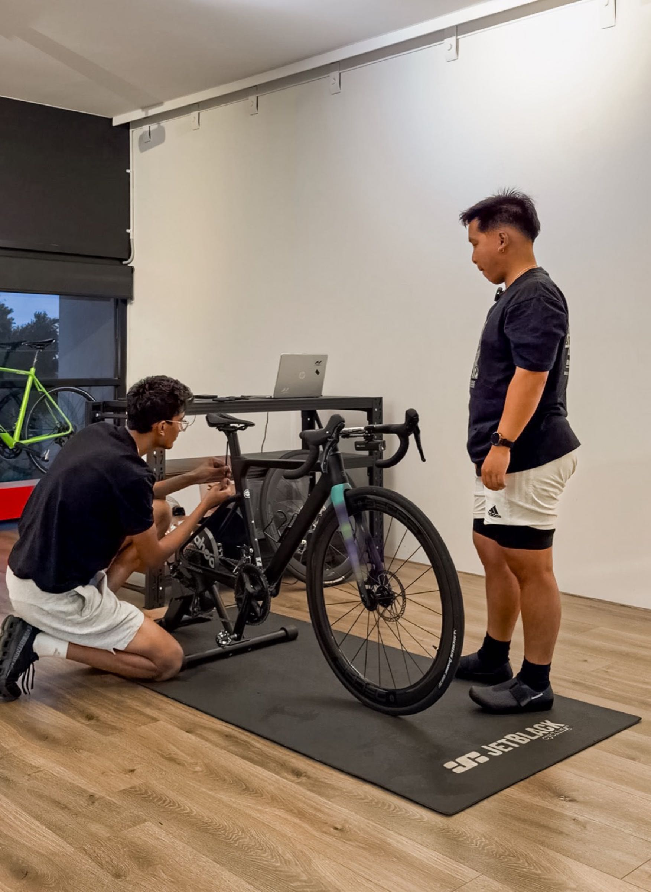
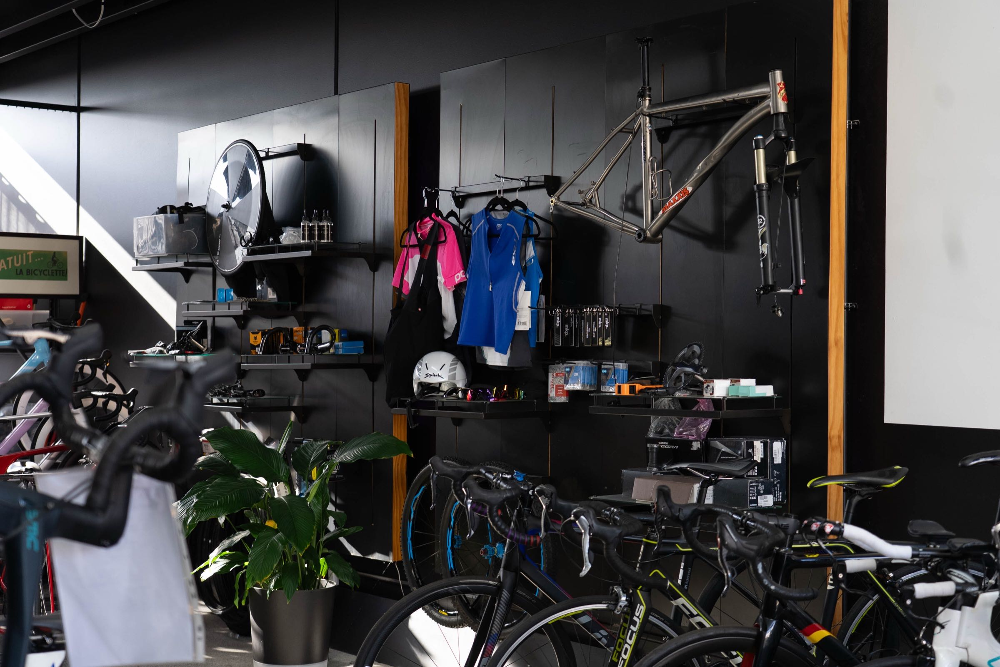

Ride without the pain.
Most cyclists ride in pain they think is normal. It’s not. Our 90-minute fit starts off the bike, assessing your mobility and flexibility first, so every adjustment is built around your body, not a generic template.
Is a bike fit right for you?
If any of these sound familiar, a comprehensive fit can help.
Discomfort on the bike is often caused by poor positioning, not your body. A proper fit can eliminate most pain issues.
Numbness and tingling usually come from pressure points caused by incorrect reach, saddle position or cleat alignment.
If you’re working hard but not going fast, your position may be costing you watts. A fit optimises your power transfer.
A fit from day one prevents bad habits, avoids injury and sets the bike up perfectly for your body.
Your body changes. A re-fit accounts for flexibility, strength and mobility so you can ride comfortably again.
Tell us what’s bothering you on the bike and we’ll tell you honestly if a fit will help.
Message the teamHow it works
Five steps to your best riding position.
Your riding history, goals, current discomfort and what you want from the fit.
Functional screening of flexibility, mobility and asymmetries that affect your ride.
Biomechanical angles, movement patterns, position and pedalling dynamics while you ride.
Real-time changes to saddle height, reach, handlebar position and cleat alignment.
A detailed report of your final position, recommendations and follow-up actions.
In-studio session at 5/17 Kylie Place, Cheltenham. Outside Melbourne? Message us to confirm travel or freight first.

Ash Saxena
Bike fitter & sports science practitioner
Ash has spent over eight years racing competitively across track and road. Combined with a sports science background, he understands how body mechanics and bike setup work together, and focuses on practical results, not theory.
“Whether you’re chasing performance gains or simply want to enjoy cycling more, my aim is to help you become more comfortable, efficient and confident on the bike.”
Bike fit options
- Pre-fit consultation & goal setting
- Functional movement screening
- On-bike assessment using the visual-cue method
- Saddle, handlebar & cleat adjustments
- Rider feedback & recommendations
- Detailed fit report to take home
Save $30 on your fit with any bike purchased from MKP Bikes.
Customisable support for comfort, stability and power transfer.
$50 · EnquireTrial different saddles during your fit. Price varies by saddle.
EnquireWhat riders say
“Ash completely transformed my riding. I had chronic knee pain for months. After the fit, it was gone within a week.”
“I didn’t realise how much my position was holding me back. Thorough, professional, and Ash explained everything clearly.”
“As someone who races, the marginal gains from a proper fit are real. More power, more comfort, and I can ride longer.”
“After a few rides, my lower back pain was completely gone.”
“Numb hands and sore knees on longer rides. The fitting session fixed both almost immediately.”
“The cleat and saddle adjustments made a massive difference. Longer rides feel smoother and far less fatiguing.”
Questions
How long does a bike fit take?
A Functional Bike Fit session takes approximately 90 minutes.
Do I need to bring my own bike?
Yes, please bring the bike you ride most. We make adjustments directly to your bike during the session.
Is a bike fit worth it for beginners?
Absolutely. Beginners benefit the most because a proper fit prevents bad habits and reduces injury risk.
What if it doesn’t help?
Our peace of mind guarantee: a full refund if you don’t experience improvement after your bike fit.
How do I book?
Tap any “Book” button to message us on WhatsApp and we’ll lock in a time at the Cheltenham studio.
